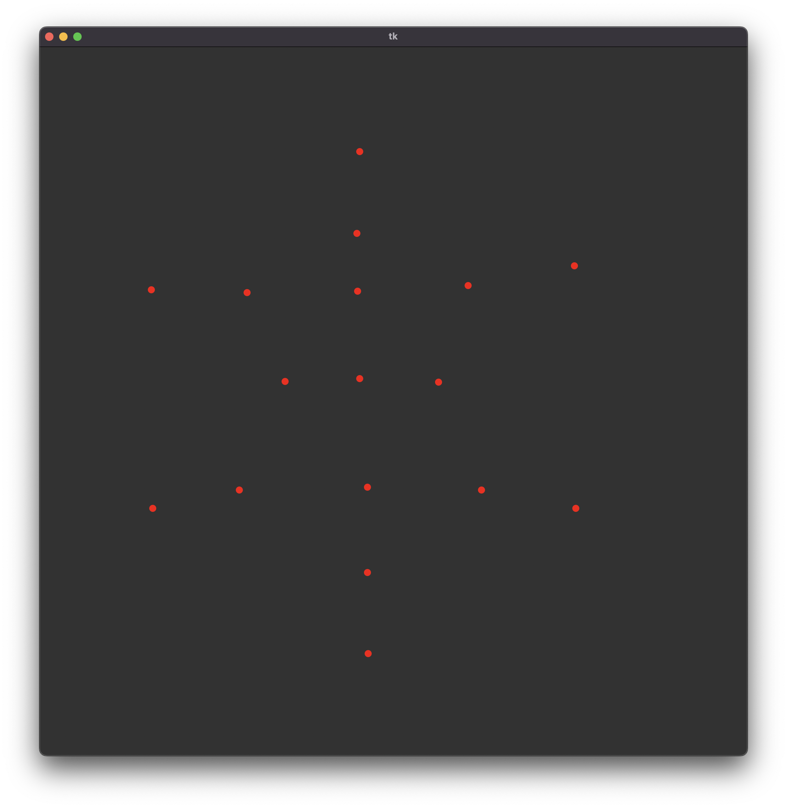

The principle of functionality consists of determining the starting point, choosing the direction of rotation of the resulting spiral, and calculating the angles between the given points.
Let the points be:
[(455, 149), (159, 345), (161, 655), (467, 861), (762, 655), (760, 311), (451, 265), (295, 349), (284, 629), (466, 746), (628, 629), (609, 339), (452, 347), (349, 475), (466, 625), (567, 476), (455, 471)]
...let's visualize the points...
For easier manipulation, we selected the point that is as close as possible to the top edge (y = 0) as our starting point.
We then take the value on the x-axis of the selected point and create an imaginary point with the position [x, 0] (if the starting point is the highest point of all), for other starting points we need to create a specific imaginary point in a different way).
Now we connect the imaginary point with the starting point.
Afterwards, we calculate angles (positive values) between the imaginary point, starting point, and every point from the remaining points.
Now it's time to decide which direction of rotation we want our spiral to have. For anticlockwise rotation, we use "anticlockwise" angles (as in the image). The next point in an anticlockwise spiral is the point for which the angle is the smallest (if we are using angles - A - as in the image, in implementation "360 - angle" is used so we need the largest value) of the set of calculated angles. For clockwise rotation, the next point would be the point for which the angle is the largest of the set of calculated angles (in implementation the smallest value).